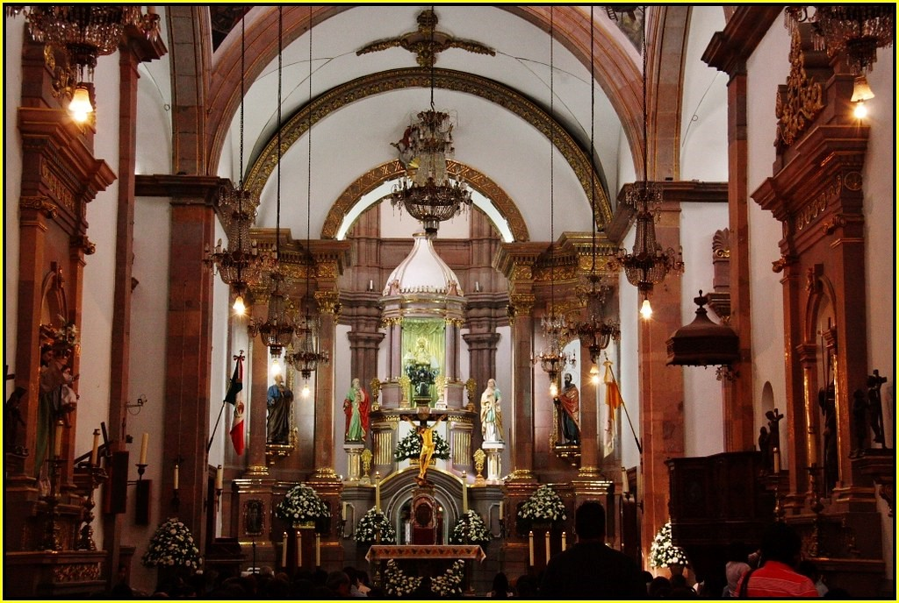

Michoacán – Turismo Comunitario
Bienvenido a las experiencias de Turismo Comunitario en Michoacán.

Historia
El estado de Michoacán es reconocido por sus expresiones artísticas y culturales. Lo que se desarrolló gracias a los misioneros que encabezaba Don Vasco de Quiroga, por lo que se incrementaron los niveles culturales, surgieron colegios donde se educaban a españoles, mestizos e indígenas. La expresión de ello es la Primera Casa de Altos Estudios en América en Tiripetío. Don Vasco de Quiroga estableció en 1538, el Colegio de San Nicolás en Pátzcuaro, que es el antecedente de la Universidad Michoacana de San Nicolás de Hidalgo.
La K'uinchekua (La fiesta de Michoacán o Pensamiento del cielo)
Se reúne gran variedad de las manifestaciones culturales del estado de Michoacán como la música, canto, danza y celebraciones tradicionales simbolizando la unidad
y el fortalecimiento del pueblo Purépecha.
Tienes sus orígenes cuando en las puertas de La Casa de las Artesanías los artesanos presentaban sus obras terminadas acompañandolas de música, danzas y caballos
bailadores cada ocho días con la intención de promoverse a sí mismo; fue así que funcionarios del Instituto Michoacano de Cultura propusieron llevar estas presentaciones
a un teatro apoyados por el Consejo Nacional para la Cultura y las Artes.
Se ha presentado en el Palacio de Bellas Artes, el Auditorio Nacional e incluso ha tenido participación en el Festival Internacional Cervantino.
Este macro evento se lleva a cabo entre la segunda y tercera semana de marzo; dentro de las danzas más representativas que se pueden observar son:
- Kuautli
- De los Moros
- Las Panaderas
- Los Kúrpites
- Los viejitos
- Los Tlahualiles